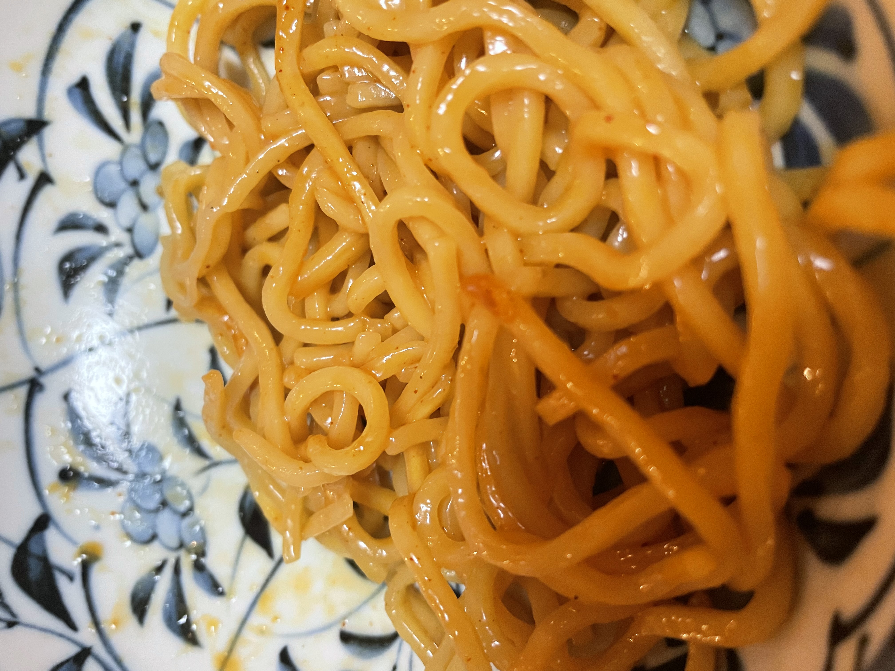
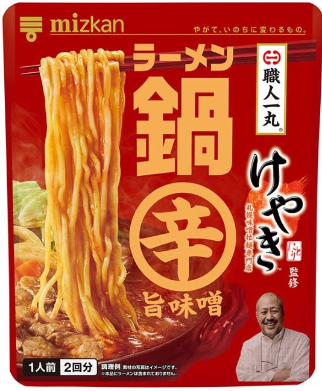

25/11/13（投稿日）TERUO＠teruo
★★★⋆ 3.5
「油そばになった笑」
（札幌味噌拉麺専門店けやき監修 ラーメン鍋 辛旨味噌）
液体に対する麺の量をミスって、麺多すぎて、油そばになった。（麵が多すぎたせいで、所々麵が冷えていて良くなかった。）
もう1回化学の味がする件含めて、確認するために食べる。
■食べた日：25/11/13
■食べ方：1袋×200mlの水×中華麺のみ⇒3.5
（自分で撮った写真/公式写真）
25/11/12（投稿日）TERUO＠teruo
★★★★ 4.0
「うま辛いラーメン」
（札幌味噌拉麺専門店けやき監修 ラーメン鍋 辛旨味噌）
うめぇわ。なんか美味いなおい。最初、味に化学が強すぎるかなと思ったけどうまいな。また食べたいわ。
シンプルに食べたね。袋1袋使い、中華麵だけでうまいな。その後、ごはん入れたけどうまかったわ。
化学を感じるのは、また食って確かめるしかねぇな。
■食べた日：25/11/12
■食べ方：1袋×200mlの水×中華麺のみ⇒4.0
（公式写真）